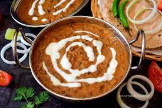

DAL MAKHNI RECIPE

INGREDIENTS
- Black lentils (whole urad dal): 1 cup
- Red kidney beans (rajma): ¼ cup
- Butter: 4 tablespoons
- Chopped onion: 1 large
- Chopped tomatoes: 2 large
- Ginger-garlic paste: 2 tablespoons
- Red chili powder: 1 teaspoon
- Salt to taste
- Garam masala powder: 1 teaspoon
- Cream: ¼ cup
- Kasuri methi (dried fenugreek leaves): 1 tablespoon
Method
- Rinse and soak black lentils and red kidney beans separately for at least 4 hours. Pressure cook them together until soft.
- Heat butter in a pan. Add chopped onion and sauté until golden.
- Add ginger-garlic paste and cook until the raw smell disappears.
- Add chopped tomatoes, red chili powder, garam masala, and salt. Cook until tomatoes are soft.
- Add the cooked lentils and beans. Simmer on low heat for 20-30 minutes.
- Add cream and kasuri methi. Mix well and simmer for a few more minutes.
- Serve hot with naan or rice.
Dal Makhni is Ready!!!